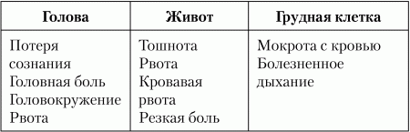

Первая медицинская помощь
Как правильно оказать медицинскую помощь?
В данной главе мы поговорим о том, как правильно оказать первую (доврачебную) помощью. Ведь «скорой» ждать иногда приходится довольно долго, а за это время можно попытаться спасти жизнь пострадавшему.
Помните, что доврачебная помощь не сможет заменить квалифицированную медицинскую помощь, поэтому не нужно думать, что если вы оказали кому-то доврачебную помощью, то можно больного не госпитализировать. Хотя тут все зависит от повреждения – если просто порез, то «скорую» можно и не вызывать, а вот если порез серьезный, то нужно остановить кровотечение и вызвать «скорую».
Помните, что, если пострадавший потерял сознание или ранен в голову, грудь, живот, не нужно ему давать пить – и избегайте лишних перемещений.
Ушибы, царапины, ссадиныПри ударе (падении) повреждаются мягкие ткани, разрываются мелкие кровеносные сосуды (капилляры) – образуется кровоподтек. Кожа целая, но на месте ушиба она окрашивается в багровый или темно-лиловый цвет. Первое, что нужно сделать, – это приложить лед. Если льда рядом нет, тогда сложите тряпочку в несколько слоев, намочите ее в холодной воде и приложите к месту ушиба.
При ушибе головы, живота или грудной клетки могут быть повреждены внутренние органы и произойти внутреннее кровотечение. Симптомы ушибов головы, живота и грудной клетки приведены в табл. 1.
Таблица 1. Симптомы ушибов головы, живота и грудной клетки
Если наблюдаются симптомы, приведенные в табл. 1, нужно срочно доставить пострадавшего в больницу.
Теперь поговорим о царапинах и ссадинах. В этом случае повреждается кожа, возникает опасность кровотечения и заражения раны. Чтобы избежать заражения, нужно смазать рану йодом и перевязать чистым бинтом (желательно стерильным). Не нужно промывать рану водой (в нашей воде может быть больше микробов, чем вокруг раны) или перевязывать грязными тряпками.
Остановка кровотеченияКровотечения бывают трех типов: капиллярные, венозные и артериальные. Небольшие кровотечения (капиллярные) останавливаются самостоятельно – кровь свертывается, образуется сгусток, который закупоривает поврежденный сосуд. Можно просто смазать рану йодом, чтобы поубивать окружающие ее микробы.
Венозное кровотечение отличается цветом крови и скоростью самого кровотечения: цвет крови темно-красный, она вытекает равномерной струйкой с небольшой скоростью. Напомню, что вены доставляют кровь к сердцу, она уже не содержит кислорода, оттого и цвет темно-красный. Артерии доставляют кровь к внутренним органам от сердца. Артериальная кровь богата кислородом, поэтому ее цвет светло-красный, алый. Давление в артериях большое – ведь сердце только-только вытолкнуло кровь в артерии, скорость артериального кровотечения очень большая. Понятно, что артериальное кровотечение наиболее опасное для жизни.
Для остановки слабого венозного кровотечения нужно наложить давящую повязку. К ране прижимают стерильный материал (вату, марлевый тампон) и туго перебинтовывают. Давящую повязку нельзя накладывать, если в ране находится острое инородное тело, – перед этим данный предмет нужно извлечь из раны.
Для остановки более сильного кровотечения нужно прижать рукой поврежденный сосуд к кости: артерию нужно прижимать выше раны, а вену – ниже. После этого нужно выше (или ниже – для вены) места ранения перетянуть поврежденный сосуд жгутом. Жгут нужно стягивать не слишком туго – главное, чтобы силы натяжения хватило, чтобы остановилось кровотечение. Жгут нельзя держать более двух часов. Если до больницы ехать более двух часов, нужно на 15 минут ослабить жгут, а потом снова его затянуть.
Ваша аптечкаЧто должно быть в вашей аптечке? Не что есть, а что должно быть. Обратите внимание! Если чего-то не хватает, тогда нужно докупить.
• Обезболивающие и противоспалительные средства:
– анальгин – 1 уп.;
– аспирин – 1 уп.
• Средства для остановки кровотечений и обработки ран:
– портативный охлаждающий пакет-контейнер – 1 шт.;
– раствор сульфацила натрия – 1 флакон;
– жгут для остановки артериального давления;
– бинт стерильный 10x5 – 1 шт.;
– бинт нестерильный 10x5 – 1 шт.;
– бинт нестерильный 5x5 – 1 шт.;
– бинт эластичный трубчатый нестерильный – 1 шт.;
– лейкопластырь бактерицидный 2 х5 см – 8 шт.;
– лейкопластырь 1 х 500,2 х 500 или 1 х 250 – 1шт.;
– салфетки стерильные для остановки капиллярного кровотечения – 3 шт.;
– раствор йода 5 %-ный – 1 флакон;
– вата 50 г – 1шт.
• При сердечной боли:
– валидол – 1 уп.;
– нитроглицерин – 1 уп.
• При обмороке:
– аммиака раствор (нашатырный спирт) – 1 флакон.
• При пищевых отравлениях:
– уголь активированный – 1 уп.
• При стрессе:
– корвалол – 1 флакон.
• Ножницы.